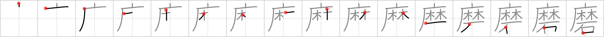

磨
← →
grind

Reading:
On-Yomi: マ — Kun-Yomi: みが.く、す.る
Heisig story:
Hemp . . . stone.
Koohii stories:
1) [ashman63] 15-4-2008(283): If you grind the hemp you are bound to get stoned quicker.
2) [Nukemarine] 8-8-2007(46): You must GRIND the HEMP collected in the grove by your cave on solid STONE to make the best ropes.
3) [CSBarnes] 20-12-2008(30): "Grind, grind, grind the hemp, slowly with the stone".
4) [BStoobs] 24-11-2007(22): Ma (マ) used to grind hemp with a stone and then brush her teeth with it to relieve the pain when she got toothache.
5) [mcmike2099] 10-5-2009(15): Grind your HEMP on a STONE to prepare the marijuana that will get you stoned.